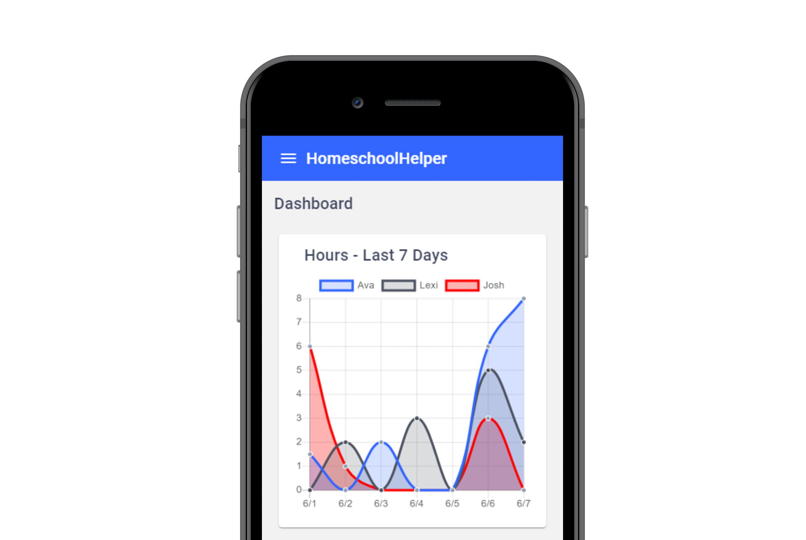

<mat-sidenav-container class="sidenav-container" *ngIf="user.loggedIn">
<mat-sidenav #drawer class="sidenav" fixedInViewport
    [attr.role]="(isMobile$ | async) ? 'navigation' : 'dialog'"
    [mode]="(isMobile$ | async) ? 'side' : 'over'"
    [opened]="(isMobile$ | async)">
  
  <mat-nav-list *ngIf="user.loggedIn">
    <mat-toolbar>
    </mat-toolbar>
    <a mat-list-item *ngFor="let link of loggedInUserMenu" routerLink="{{ link.path }}" (click)="closeSideNav()">
      <mat-icon>{{ link.icon }}</mat-icon>{{ link.title }}
    </a>
    <mat-divider></mat-divider>
    <button class="logout-button" mat-button (click)="logout()">
      <mat-icon>exit_to_app</mat-icon>Log Out
    </button>
  </mat-nav-list>
</mat-sidenav>

<mat-sidenav-content>
  <mat-toolbar color="primary">
    <button
      type="button"
      aria-label="Toggle sidenav"
      mat-icon-button
      (click)="drawer.toggle()"
      *ngIf="!(isMobile$ | async)">
      <mat-icon aria-label="Side nav toggle icon">menu</mat-icon>
    </button>
    <span>HomeschoolHelper</span>
  </mat-toolbar>
  <router-outlet></router-outlet>
</mat-sidenav-content>
</mat-sidenav-container>

<div class="container" *ngIf="!user.loggedIn">
  <mat-toolbar class="navbar">
    <span>Homeschool Helper</span>
    <div class="navbar-links">
      <button mat-button (click)="openRegistrationDialog()">Register</button>
      <button mat-button (click)="openLoginDialog()">Login</button>
    </div>
  </mat-toolbar>
  
  <svg class="desktop-background" xmlns="http://www.w3.org/2000/svg" viewBox="0 0 1440 420">
    <path fill="#ffe6b3" fill-opacity="1" d="M0,32L80,69.3C160,
      107,320,181,480,192C640,203,800,149,960,138.7C1120,128,1280,
      160,1360,176L1440,192L1440,420L1360,420C1280,420,1120,420,960,
      420C800,420,640,420,480,420C420,420,160,420,80,420L0,420Z">
    </path>
  </svg>
  
  <svg class="mobile-background" xmlns="http://www.w3.org/2000/svg" viewBox="0 0 1440 620">
    <path fill="#ffe6b3" fill-opacity="1" d="M0,32L80,69.3C160,
      107,320,181,480,192C640,203,800,149,960,138.7C1120,128,1280,
      160,1360,176L1440,192L1440,620L1360,620C1280,620,1120,620,960,
      620C800,620,640,620,480,620C620,620,160,620,80,620L0,620Z">
    </path>
  </svg>
  
  
  
  <div class="headline">
    <h1 class="main-text">A simple way to record your school hours.</h1>
    <span class="desktop-links" (click)="openRegistrationDialog()">Join Now</span>
    <span class="mobile-links">
      <span class="mobile-register-link" (click)="openRegistrationDialog()">Register</span>
      <span class="mobile-login-link" (click)="openLoginDialog()">Login</span>
    </span>
  </div>
</div>